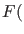
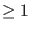
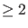

Next: Failure handling Up: Options Previous: Tangent search order Contents
| Syntax of call | What it should do (options involved) |
| feval(cds.curve_func,x) | return x |
| feval(cds.curve_options) | return option vector |
| feval(cds.curve_jacobian,x) | return Jacobian at x (SymDerivative) |
| feval(cds.curve_hessians,x) | return Hessians at x (SymDerivative) |
| feval(cds.curve_init,x,v) | initialize user variable space (WorkSpace) |
| feval(cds.curve_done) | destroy user variable space (WorkSpace) |
| feval(cds.curve_defaultprocessor,x,v,s) | initialize data for testfunctions and |
| set some general singularity data | |
| feval(cds.curve_testf,ids,x,v) | return evaluation of testfunctions ids at x |
| (Singularities) | |
| feval(cds.curve_locate,i,x1,x2,v1,v2) | return located singularity and tangent |
| vector(Locators) | |
| feval(cds.curve_userf,UserInfo,ids,x,v) | return evaluation of userfunctions ids with |
| UserInfo at x (Userfunctions) | |
| feval(cds.curve_singmat) | return singularity matrix (Singularities) |
| feval(cds.curve_process,i,x) | run processor code of singularity i |
| at x(Singularities) | |
| feval(cds.curve_adapt,x,v) | run adaptation code of problem (Adapt) |